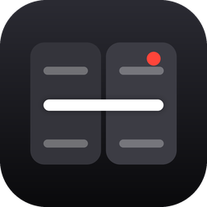

GazelineDatenschutzerklärung
Stand: 19. Oktober 2026
Kurz gesagt
Gazeline sammelt keine personenbezogenen Daten. Es gibt kein Konto, kein Tracking, keine Werbung und keine Analyse-Dienste. Alles, was du in der App tust, bleibt auf deinem iPhone.
1. Verantwortlicher
Andreas Pielczyk
Buchenstr. 14
50389 Wesseling
Deutschland
E-Mail: support@ap-apps.de
2. Was die App auf deinem iPhone verarbeitet
- Skript und Einstellungen: Dein Text und deine Einstellungen werden nur auf dem Gerät gespeichert. Sie werden nicht übertragen.
- Kamera und Mikrofon: Die App braucht beides, um dein Video mit Ton aufzunehmen. Die Aufnahme entsteht auf deinem iPhone. Bis sie in Fotos gesichert ist, liegt sie in einem Ordner der App. Wir erhalten keine Aufnahmen.
- Fotos (nur Hinzufügen): Die App darf fertige Videos in deiner Fotomediathek ablegen. Sie liest deine vorhandenen Fotos und Videos nicht.
- Spracherkennung: Damit der Text deiner Stimme folgt, nutzt die App die Spracherkennung von iOS. Sie läuft auf dem Gerät. Dein Ton wird nicht an uns gesendet. Beim ersten Mal kann iOS dafür ein Sprachmodell von Apple laden. Das übernimmt das System.
- Kamera-Eigenschaften: Die App liest technische Daten deiner Kameras (etwa mögliche Auflösungen und Bildraten), um dir passende Einstellungen anzubieten. Diese Daten verlassen das Gerät nicht.
Für jede dieser Funktionen fragt iOS dich vorher um Erlaubnis. Du kannst sie jederzeit in den Einstellungen von iOS wieder entziehen.
3. Abonnement (Gazeline Pro)
Kauf und Abrechnung laufen ausschließlich über Apple (App Store). Wir erhalten keine Zahlungsdaten. Die App prüft auf dem Gerät nur, ob ein Abonnement aktiv ist. Für die Abwicklung gilt die Datenschutzerklärung von Apple.
4. Weitergabe an Dritte
Wir geben keine Daten weiter. Die App enthält keine Software von Drittanbietern und keine Werbe- oder Analyse-Kennungen.
5. Speicherdauer und Löschen
Deine Daten bleiben auf deinem iPhone, bis du sie löschst oder die App deinstallierst. Mit dem Löschen der App entfernt iOS alle Daten der App.
6. Absturzberichte
Wenn du in iOS erlaubt hast, Diagnosedaten mit App-Entwicklern zu teilen, können Absturzberichte über Apple bei uns ankommen. Sie enthalten keine Inhalte deiner Aufnahmen oder Skripte und lassen sich nicht auf dich persönlich zurückführen.
7. Kinder
Die App richtet sich nicht gezielt an Kinder.
8. Deine Rechte
Du hast nach der DSGVO Rechte auf Auskunft, Berichtigung, Löschung, Einschränkung der Verarbeitung, Datenübertragbarkeit und Widerspruch. Da wir keine Daten über dich speichern, können wir dir dazu meist nur mitteilen, dass nichts vorliegt. Du kannst dich außerdem bei einer Datenschutz-Aufsichtsbehörde beschweren.
9. Änderungen
Ändert sich die App so, dass sich etwas an dieser Erklärung ändert, passe ich sie hier an und aktualisiere das Datum oben.
Privacy Policy
Last updated: 19 October 2026
In short
Gazeline does not collect personal data. There is no account, no tracking, no advertising and no analytics. Everything you do in the app stays on your iPhone.
1. Controller
Andreas Pielczyk
Buchenstr. 14
50389 Wesseling
Germany
Email: support@ap-apps.de
2. What the app processes on your iPhone
- Script and settings: Your text and settings are stored on the device only. They are not transmitted.
- Camera and microphone: The app needs both to record your video with sound. The recording is made on your iPhone. Until it is saved to Photos it sits in a folder of the app. We do not receive recordings.
- Photos (add only): The app may save finished videos to your photo library. It does not read your existing photos and videos.
- Speech recognition: So the script can follow your voice, the app uses iOS speech recognition, which runs on the device. Your audio is not sent to us. The first time, iOS may download a speech model from Apple. The system handles that.
- Camera properties: The app reads technical data about your cameras (such as possible resolutions and frame rates) to offer suitable settings. This data does not leave the device.
iOS asks for your permission before each of these features. You can withdraw it at any time in iOS Settings.
3. Subscription (Gazeline Pro)
Purchases and billing are handled entirely by Apple (App Store). We do not receive payment data. The app only checks on the device whether a subscription is active. Apple’s privacy policy applies to the transaction.
4. Sharing with third parties
We do not share data. The app contains no third-party software and no advertising or analytics identifiers.
5. Retention and deletion
Your data stays on your iPhone until you delete it or uninstall the app. Deleting the app removes all of its data.
6. Crash reports
If you have allowed iOS to share diagnostics with app developers, crash reports may reach us through Apple. They contain no content from your recordings or scripts and cannot be traced back to you personally.
7. Children
The app is not directed at children.
8. Your rights
Under the GDPR you have the rights of access, rectification, erasure, restriction of processing, data portability and objection. Since we store no data about you, we can usually only confirm that there is none. You may also lodge a complaint with a data protection supervisory authority.
9. Changes
If a change to the app affects this policy, I will update it here and change the date above.